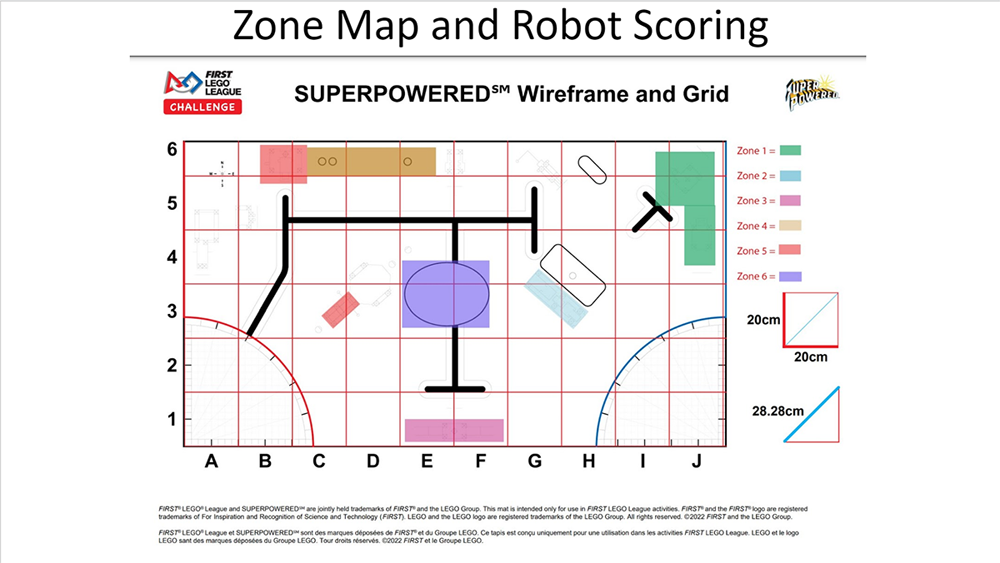
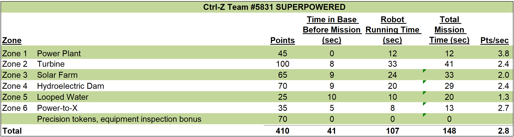

High-Level Strategy
Over the first few months of our season, our team spent many hours designing, building,
and programming our base robot and attachments.
While our team strives to create a robot that is as repeatable as possible,
we recognize that achieving 100% repeatability on the robot is practically impossible
due to varying mat and table conditions. However, with the use of our colour sensors,
we can minimize the error associated with navigation and mission completion.
Robot and General Strategy
- Maximize points per second (i.e. minimizing time in launch area to complete as many missions as possible,
combining missions based on proximity and attachment used (see diagram below)
- Use the printed markings in the launch area to position the robot for launch
- Use reference points on the mat (lines, wall, and mission models)
- Using small, compact, and efficient attachments
- Follow the wall with guide wheels, when possible, to drive straight
- Follow the lines on the mat to guide our robot to mission models
Robot Zone Map

Analysis of Points Scored Per Second
